| Nama Lengkap | : Muhammad Daffa Khairi Addin |
| Nomor Induk Mahasiswa (NIM) | : 240104040147 |
| Program Studi | : S1 Teknologi Informasi |
| Fakultas | : Tarbiyah dan Keguruan |
| Perguruan Tinggi | : Universitas Islam Negeri Antasari Banjarmasin |
| Mata Kuliah | : Web Service Engineering |
| Dosen Pengampu | : Muhayat, M.IT |
| Topik Praktikum | : Desain Endpoint, Arsitektur Berlapis, & OpenAPI |
| Studi Kasus | : Layanan Katalog Buku Perpustakaan Kampus |
| Tahun Akademik | : 2026 |
Praktikum ini menerapkan konsep perancangan endpoint dan implementasi web service menggunakan framework Node.js dan Express. Mahasiswa membangun API katalog buku perpustakaan kampus mulai dari penyiapan lingkungan, perancangan kontrak endpoint, implementasi arsitektur berlapis (routing, controller, service, repository), penanganan validasi dan error secara terpusat, hingga penyusunan spesifikasi OpenAPI 3.1.0 dan pengujian interaktif menggunakan Swagger UI.
Pengetahuan: Menjelaskan peran runtime Node.js, framework Express, router, controller, service, repository, serta kontrak OpenAPI.
Perancangan: Menetapkan rancangan resource, model data, metode HTTP, status code semantik, format pesan sukses/gagal, serta kondisi penolakan input.
Keterampilan: Menyiapkan dependensi exact-version, mengonfigurasi listener loopback lokal port 3200, dan mengimplementasikan operasi CRUD katalog secara menyeluruh.
Pengujian: Membuktikan keberhasilan operasi bisnis serta ketegasan penolakan data invalid melalui respons aktual HTTP dan logging terminal.
Dokumentasi: Menyusun skrip generator OpenAPI 3.1.0 otomatis dan menguji seluruh operasi API secara visual melalui Swagger UI lokal.
Eksperimen dan verifikasi praktikum dilaksanakan pada lingkungan sistem lokal dengan rincian perangkat aktual sebagai berikut:
| Komponen Sistem | Versi / Konfigurasi Aktual |
|---|---|
| Sistem Operasi | Microsoft Windows 11 Home / Pro (x64 Architecture) |
| Runtime Environment | Node.js v24.11.0 (LTS Iron Series) |
| Package Manager | npm v11.6.1 |
| Web Framework | Express v5.3.0 (Fixed Exact Dependency) |
| OpenAPI Documentation | swagger-ui-express v5.0.1 (Local Interface Asset) |
| Code Editor & Shell | Visual Studio Code & Git Bash / Command Prompt |
| HTTP Client | Node.js Custom Fetch Client (client.cjs) & Browser Swagger UI |
Web service adalah antarmuka komunikasi antar-aplikasi (machine-to-machine) yang memanfaatkan protokol standar web, khususnya HTTP. Pada arsitektur REST (Representational State Transfer), interaksi terjadi antara penyedia layanan (provider) dan pengguna layanan (consumer) menggunakan metode HTTP yang memiliki semantik terstandarisasi (RFC 9110):
GET: Operasi bersifat safe dan idempotent untuk membaca representasi resource tanpa menimbulkan efek samping (side effects) pada server.
POST: Operasi non-idempotent untuk menambahkan resource baru ke koleksi. Respons berhasil mengembalikan kode status 201 Created serta header Location yang mengarahkan consumer ke URI resource yang baru dibuat.
PUT: Operasi bersifat idempotent untuk mengganti (replace) seluruh field yang dapat ditulis pada target resource yang sudah ada. Jika terdapat field yang hilang pada body, server menolak permintaan karena PUT menuntut representasi entitas yang utuh.
DELETE: Operasi idempotent untuk menghapus resource dari penyimpanan. Keberhasilan penghapusan direspons dengan status 204 No Content tanpa payload respons (empty body).
Untuk mencegah penumpukan logika pada satu file handler (spaghetti code), proyek ini menerapkan pola pemisahan tanggung jawab (Separation of Concerns) yang memisahkan aplikasi menjadi lima lapisan independen:
1. Routing (src/buku.routes.cjs): Bertanggung jawab memetakan kombinasi metode HTTP dan path URI ke fungsi controller yang sesuai. Lapisan ini juga mengisolasi parameter path melalui router.param dan memvalidasi Content-Type melalui middleware jsonOnly.
2. Controller (src/buku.controller.cjs): Mengatur konteks HTTP. Controller mengekstrak parameter query, path, dan body dari objek req, meneruskannya ke service, serta mengemas hasil ke dalam format respons baku (res.json, res.status, res.location). Controller tidak boleh memanipulasi penyimpanan data secara langsung.
3. Service (src/buku.service.cjs): Menjalankan aturan bisnis (domain business logic) katalog. Service memastikan kepatuhan model data (melalui fungsi validasi), memeriksa keberadaan data (detail checking), serta bersifat agnostik terhadap Express (tidak bergantung pada objek req maupun res).
4. Repository (src/buku.repository.cjs): Mengabstraksi akses ke lapisan penyimpanan. Pada praktikum ini, repository mengelola koleksi data buku dalam memori (in-memory array) melalui lima operasi dasar: list, find, create, replace, dan remove.
5. Centralized Error Handling & Validation (src/errors.cjs & app.cjs): Mendefinisikan kelas HttpError terstruktur yang membawa status HTTP dan kode aplikasi. Middleware penanganan kesalahan menangkap seluruh error sehingga client menerima respons JSON seragam tanpa kebocoran stack trace.
OpenAPI Specification (OAS) adalah standar deskripsi antarmuka pemrograman aplikasi HTTP yang dapat dibaca oleh manusia maupun mesin (machine-readable). Dokumen OpenAPI menjelaskan path, metode, parameter query/path, skema body, serta contoh respons sukses maupun gagal. Swagger UI adalah kakas visual yang menyajikan dokumen OpenAPI tersebut ke dalam antarmuka web interaktif lokal, memungkinkan pengembang melakukan pengujian operasi secara langsung (Try it out) menggunakan data nyata.
Resource buku perpustakaan kampus dimodelkan dengan atribut dan aturan validasi ketat sebagai berikut:
id (Number / Integer): Bilangan bulat positif (> 0) yang digenerate otomatis oleh server. Harus berada dalam batas aman JavaScript (Number.isSafeInteger <= 9007199254740991). Ditolak jika dikirim dalam body POST atau PUT.
judul (String): Teks judul buku. Setelah melalui proses pemangkasan spasi (trim), panjang karakter wajib berada di antara 1 hingga 120 unit string UTF-16. Judul yang hanya terdiri dari spasi atau string kosong akan ditolak.
tersedia (Boolean): Status ketersediaan buku di perpustakaan. Wajib bertipe boolean asli (true atau false). Nilai bertipe string seperti "true" atau "false" ditolak secara tegas.
Aturan Properti Ekstra: Body request hanya boleh memuat properti 'judul' dan 'tersedia'. Pengiriman field tambahan di luar skema akan langsung memicu penolakan 400 INVALID_BOOK.
| Metode & Path | Parameter / Input | Respons Berhasil | Kondisi Kegagalan |
|---|---|---|---|
| GET /api/buku | Query param: q (opsional, maks 80 karakter) | 200 OK dengan array katalog buku | 400 INVALID_QUERY (q > 80 atau duplikat) |
| GET /api/buku/:id | Path param: :id (bilangan bulat positif) | 200 OK dengan objek buku tunggal | 400 INVALID_ID, 404 BOOK_NOT_FOUND |
| POST /api/buku | Body: JSON {judul, tersedia} | 201 Created + Header Location + Objek | 400 INVALID_BOOK / INVALID_JSON, 413, 415 |
| PUT /api/buku/:id | Path: :id; Body: JSON {judul, tersedia} | 200 OK dengan objek hasil pembaruan | 400 INVALID_BOOK / ID, 404, 413, 415 |
| DELETE /api/buku/:id | Path param: :id (bilangan bulat positif) | 204 No Content (tanpa body payload) | 400 INVALID_ID, 404 BOOK_NOT_FOUND |
// Respons Berhasil (HTTP 200 / 201):
{
"success": true,
"data": {
"id": 1,
"judul": "Dasar Pemrograman Kotlin",
"tersedia": true
}
}
// Respons Gagal (HTTP 400 / 404 / 413 / 415 / 500):
{
"success": false,
"error": {
"code": "BOOK_NOT_FOUND",
"message": "Buku tidak ditemukan."
}
}
WSE_Praktikum_05_240104040147_Muhammad Daffa Khairi Addin/
├── package.json # Metadata dependensi express@5.3.0 & swagger-ui-express@5.0.1
├── package-lock.json # Rekaman pasti pohon dependensi
├── app.cjs # Komposisi Express, middleware, rute OpenAPI & Swagger UI
├── server.cjs # Listener HTTP pada host 127.0.0.1 port 3200
├── client.cjs # HTTP client CLI berbasis global fetch & AbortSignal
├── README.md # Panduan instalasi dan reproduksi pengujian
├── docs/
│ └── openapi.json # Berkas spesifikasi OpenAPI 3.1.0 yang digenerate otomatis
├── scripts/
│ └── generate-openapi.cjs # Skrip generator OpenAPI dengan contoh respons error lengkap
├── samples/ # Berkas muatan uji (valid, parsial, salah tipe, rusak)
└── src/ # Modul arsitektur berlapis
├── errors.cjs # Kelas HttpError, parseId, dan validateBuku
├── buku.repository.cjs # In-memory array repository CRUD
├── buku.service.cjs # Logika domain dan orkestrasi validasi
├── buku.controller.cjs # Adaptor konteks HTTP
└── buku.routes.cjs # Pemetaan endpoint & middleware jsonOnly
1. src/errors.cjs: Fungsi parseId memastikan ID berupa string digit desimal murni tanpa leading zero dan berada pada rentang safe integer. Fungsi validateBuku memastikan objek tidak berupa array, tidak memiliki atribut ekstra di luar judul dan tersedia, serta memeriksa tipe boolean secara ketat.
2. src/buku.repository.cjs: Mengelola array buku dalam memori dengan data awal ID 1 dan ID 2. Counter nextId dinaikkan setiap create untuk menjamin keunikan ID.
3. src/buku.service.cjs: Memisahkan domain logic dari protokol Express. Mengimplementasikan validasi query q, memastikan buku target ada pada operasi replace dan remove sebelum memanggil repositori.
4. src/buku.controller.cjs: Menghubungkan konteks request Express dengan service, menetapkan status code 201 dan header Location pada POST, serta status code 204 pada DELETE.
5. src/buku.routes.cjs: Menggunakan router.param('id') untuk mengekstrak dan memvalidasi ID secara otomatis pada seluruh endpoint berparameter path, serta menerapkan middleware jsonOnly pada POST dan PUT.
6. app.cjs & server.cjs: Mengintegrasikan middleware logging, Cache-Control no-store, express.json({limit: '10kb'}), rute katalog, rute /openapi.json, Swagger UI pada /docs, fallback 404, dan centralized error handler.
Pengujian dilakukan secara menyeluruh terhadap 24 skenario yang didefinisikan pada modul praktikum. Seluruh pengujian menghasilkan status LULUS (PASS) sesuai dengan spesifikasi kontrak:
| Kode | Skenario Pengujian | Hasil yang Diharapkan | Keluaran Aktual | Status |
|---|---|---|---|---|
| U01 | Versi dan paket express 5.3.0 & swagger-ui-express 5.0.1 | express@5.3.0 & swagger-ui-express@5.0.1 | └── express@5.3.0 deduped |
LULUS |
| U02 | GET seluruh daftar buku awal | Status 200 OK | Body respons: {"success":true,"data":[{... |
LULUS |
| U03 | GET detail buku ID 2 (tersedia false) | Status 200 OK | Body respons: {"success":true,"data":{"... |
LULUS |
| U04 | Pencarian buku dengan q=kotlin | Status 200 OK | Body respons: {"success":true,"data":[{... |
LULUS |
| U05 | Pencarian buku dengan q=tidakada (array kosong) | Status 200 OK | Body respons: {"success":true,"data":[]} |
LULUS |
| U06 | POST buku baru valid | Status 201 Created + Location | Body respons: {"success":true,"data":{"... |
LULUS |
| U07 | GET lokasi hasil POST buku baru (ID 3) | Status 200 OK | Body respons: {"success":true,"data":{"... |
LULUS |
| U08 | PUT penggantian lengkap buku ID 3 | Status 200 OK | Body respons: {"success":true,"data":{"... |
LULUS |
| U09 | DELETE buku ID 3 (respons 204 No Content) | Status 204 No Content | Body respons: (kosong) |
LULUS |
| U10 | GET sesudah DELETE buku ID 3 (404 BOOK_NOT_FOUND) | Status 404 Not Found | Body respons: {"success":false,"error":... |
LULUS |
| U11_a | GET ID tidak valid 1abc (400 INVALID_ID) | Status 400 Bad Request | Body respons: {"success":false,"error":... |
LULUS |
| U11_b | GET ID dengan leading zero 01 (400 INVALID_ID) | Status 400 Bad Request | Body respons: {"success":false,"error":... |
LULUS |
| U12 | GET ID tidak ditemukan 999 (404 BOOK_NOT_FOUND) | Status 404 Not Found | Body respons: {"success":false,"error":... |
LULUS |
| U13 | POST dengan tipe tersedia string "true" (400 INVALID_BOOK) | Status 400 Bad Request | Body respons: {"success":false,"error":... |
LULUS |
| U14_a | PUT parsial tanpa tersedia (400 INVALID_BOOK) | Status 400 Bad Request | Body respons: {"success":false,"error":... |
LULUS |
| U14_b | GET ID 1 memastikan data tidak berubah setelah PUT gagal | Status 200 OK | Body respons: {"success":true,"data":{"... |
LULUS |
| U15 | POST body JSON rusak (400 INVALID_JSON) | Status 400 Bad Request | Body respons: {"success":false,"error":... |
LULUS |
| U16 | POST media type text/plain (415 UNSUPPORTED_MEDIA_TYPE) | Status 415 Unsupported Media Type | Body respons: {"success":false,"error":... |
LULUS |
| U17 | GET query parameter q berulang (400 INVALID_QUERY) | Status 400 Bad Request | Body respons: {"success":false,"error":... |
LULUS |
| U18 | GET route tidak dikenal (404 ROUTE_NOT_FOUND) | Status 404 Not Found | Body respons: {"success":false,"error":... |
LULUS |
| U19 | GET spesifikasi OpenAPI 3.1.0 | Status 200 OK | } |
LULUS |
| U20 | Akses Halaman /docs/ Swagger UI | Tampil 5 operasi katalog | 5 operasi tampil lengkap interaktif |
LULUS |
| U21 | Eksekusi CRUD via Swagger UI | Status 200, 201, 204, 404 sesuai | CRUD sukses dieksekusi via Try it out |
LULUS |
| U22 | Pengujian Server Dihentikan | Client tidak memperoleh respons HTTP | TypeError (koneksi ditolak) |
LULUS |
| U23 | Pengujian Server Dimulai Ulang | Data kembali ke 2 buku awal | Buku ID 5 hilang (404), data awal pulih |
LULUS |
| U24 | Keterulangan Instalasi (README) | npm ci & npm run docs berhasil | Dependensi terpasang persis sesuai lockfile |
LULUS |
1. Validasi Siklus Hidup CRUD: Operasi POST berhasil membuat buku baru pada ID 3 dengan mengembalikan status 201 dan header Location: /api/buku/3. Pembaruan PUT mengganti seluruh data objek pada ID 3, dan operasi DELETE menghasilkan respons 204 No Content tanpa payload body. Ketika dilakukan GET sesudah DELETE, server merespons 404 BOOK_NOT_FOUND, membuktikan state lifecycle resource berjalan konsisten.
2. Ketahanan Validasi & Integritas State: Pemeriksaan ID secara ketat menolak nilai '1abc' dan '01' dengan kode INVALID_ID, membuktikan bahwa validasi regex desimal tanpa leading zero berhasil mencegah ambigu parsing. Pengujian PUT parsial ditolak dengan status 400 INVALID_BOOK dan dibuktikan melalui GET bahwa data asli tidak berubah.
3. Proteksi Parser & Media Type: Body JSON yang terpotong ditangkap oleh error handler Express dan diubah menjadi format standar aplikasi dengan status 400 INVALID_JSON. Permintaan POST dengan Content-Type text/plain ditolak oleh middleware jsonOnly dengan status 415 UNSUPPORTED_MEDIA_TYPE sebelum masuk ke controller.
4. Karakteristik Volatilitas Memori: Ketika server dimatikan, client menghasilkan error 'TypeError' (koneksi ditolak). Saat server dijalankan kembali, data tambahan ID 5 hilang dan katalog kembali ke 2 buku awal. Hal ini membuktikan karakteristik in-memory array yang bersifat volatil dan non-persisten.
Pada Tugas Mandiri 1, mahasiswa menambahkan dua buku baru melalui endpoint POST, membaca data, mengubah satu buku, dan menghapus satu buku menggunakan client terminal:
T1_01: POST Buku 1 -> Judul: 'Arsitektur Microservices Modern', tersedia: true. Respons: HTTP 201, ID aktual: 3, Location: /api/buku/3.
T1_02: POST Buku 2 -> Judul: 'Desain RESTful API Standar Industri', tersedia: false. Respons: HTTP 201, ID aktual: 4, Location: /api/buku/4.
T1_03: GET Seluruh Katalog -> Mengembalikan array 4 buku lengkap (ID 1, 2, 3, 4).
T1_04: PUT Buku ID 3 -> Mengganti judul menjadi 'Arsitektur Microservices Modern (Edisi 2)' dan tersedia menjadi false. Respons: HTTP 200.
T1_05: DELETE Buku ID 4 -> Menghapus buku ID 4. Respons: HTTP 204 No Content.
T1_06: GET Verifikasi -> GET /api/buku/4 mengembalikan 404 BOOK_NOT_FOUND. GET /api/buku mengonfirmasi katalog akhir berisi 3 buku (ID 1, 2, 3).
Mengapa penyuntingan array pada berkas kode (misal mengedit src/buku.repository.cjs secara manual) TIDAK SAMA dengan operasi yang dikirim oleh consumer melalui API?
1. Dimensi Runtime vs Statis: Penyuntingan langsung pada berkas kode mengubah kode sumber statis di disk (static code modification). Perubahan ini tidak akan terefleksi pada proses Node.js yang sedang aktif tanpa restart proses. Sebaliknya, operasi melalui API memanipulasi heap memory dari proses runtime yang sedang berjalan secara dinamis tanpa interupsi server.
2. Penegakan Kontrak & Validasi: Consumer API tunduk pada kontrak antarmuka yang divalidasi oleh berlapis-lapis pertahanan: parsing JSON, pemeriksaan media type, validasi regex ID, dan validasi tipe skema data. Penyuntingan berkas langsung dapat menyusupkan tipe data yang salah tanpa adanya penjaga (gatekeeper).
3. Efek Samping (Side Effects) & Protokol: Manipulasi via API menghasilkan respons terstruktur (201 Created, Location header, logging console, audit trail). Selain itu, pada sistem multi-pengguna, API menjamin serialisasi eksekusi event loop Node.js untuk mencegah race condition, sedangkan manipulasi file mentah tidak memiliki mekanisme proteksi transaksi.
Pada generator scripts/generate-openapi.cjs, dilakukan pengayaan spesifikasi OpenAPI 3.1.0 untuk memberikan kejelasan kontrak yang maksimal bagi consumer:
1. Deskripsi Semantik Terperinci: Setiap parameter (seperti parameter path 'id' dan query 'q') ditambahkan deskripsi semantik mendalam mengenai batas panjang UTF-16, format regex desimal tanpa leading zero, serta batas aman integer JavaScript.
2. Penambahan Objek Contoh Respons Error: Setiap kode status error (400, 404, 413, 415, 500) dilengkapi dengan contoh payload konkret (example value) yang mencerminkan format standar aplikasi: {{ success: false, error: {{ code, message }} }}.
3. Keterpaduan & Regenerasi Dokumen: Dokumen docs/openapi.json digenerate ulang menggunakan 'npm run docs' dan diverifikasi langsung pada Swagger UI (/docs/). Seluruh perubahan skema dan contoh respons error langsung tampil pada tab Example Value respons Swagger UI tanpa memerlukan restart server.
Node.js bertindak sebagai runtime environment berbasis JavaScript V8 engine yang menyediakan fondasi eksekusi server-side, sistem I/O asinkron, modul jaringan HTTP bawaan (node:http), dan akses filesystem. Sedangkan Express adalah web application framework minimalis yang berjalan di atas runtime Node.js untuk mempermudah perancangan routing, pipeline middleware, penanganan request/response, dan parsing body tanpa harus menulis logika low-level socket secara manual.
Pemisahan ini menerapkan prinsip Separation of Concerns (SoC) dan Single Responsibility Principle (SRP). Controller bertugas sebagai adapter konteks HTTP (membaca req, memilih status code, menyusun header, mengirim respons). Service bertugas menjalankan aturan bisnis aplikasi yang murni (business logic) dan validasi data secara agnostik terhadap protokol web. Repository mengabstraksi mekanisme penyimpanan data. Pemisahan ini membuat kode mudah diuji (unit testing), mudah dimodifikasi (misal mengganti array dengan database tanpa merusak controller), dan mencegah spaghetti code.
Parameter path (/api/buku/:id) adalah bagian hierarki URI untuk mengidentifikasi resource spesifik secara unik. Parameter query (?q=kotlin) adalah pasangan kunci-nilai opsional setelah tanda tanya untuk memfilter, mengurutkan, atau memaginasi representasi resource. Header membawa metadata komunikasi (seperti Content-Type, Accept, Cache-Control, dan Location). Body membawa payload data entitas yang dikirim consumer (biasanya berformat JSON pada POST atau PUT) untuk dibuat atau diperbarui.
Format JSON hanya memvalidasi sintaksis serialisasi data (seperti ketepatan tanda kutip, kurung kurawal, koma). Suatu payload dapat berformat JSON yang 100% valid, namun melanggar kontrak domain, misalnya: nilai 'tersedia' dikirim berupa string 'true' bukannya boolean, judul dikirim berupa string kosong (spasi saja), atau menyertakan field terlarang seperti 'id' atau 'harga'. Oleh karena itu, parser JSON wajib diikuti oleh validator skema aplikasi.
Fungsi bawaan JavaScript parseInt('1abc', 10) melakukan pemindaian karakter dari kiri ke kanan dan berhenti saat menemukan karakter non-angka, sehingga tetap mengembalikan angka 1. Hal ini berbahaya karena consumer mengirim '1abc' namun server memproses buku ID 1 secara diam-diam. Untuk menjamin ketegasan kontrak, validasi menggunakan regex ^[1-9][0-9]*$ yang menuntut seluruh input berupa digit positif murni tanpa toleransi karakter liar.
Sesuai spesifikasi RFC 9110, metode PUT memiliki semantik 'complete replacement' (penggantian representasi utuh). Kontrak API katalog menetapkan bahwa PUT wajib menyertakan kedua field 'judul' dan 'tersedia'. Jika client ingin memperbarui sebagian field saja, metode HTTP yang semestinya digunakan adalah PATCH. Penolakan PUT parsial mencegah penghapusan atribut data secara tidak sengaja.
Status HTTP 204 No Content secara definitif menyatakan bahwa operasi berhasil dan server sengaja TIDAK mengirimkan pesan payload (body kosong berukuran 0 byte). Jika client memaksakan pemanggilan response.json() pada body kosong, runtime akan melemparkan kesalahan SyntaxError (Unexpected end of JSON input). Oleh karena itu, client menggunakan response.text() untuk membaca respons kosong secara aman.
OpenAPI adalah spesifikasi formal (kontrak data deklaratif berbentuk file JSON/YAML) yang mendeskripsikan antarmuka API secara teoritis. Swagger UI adalah kakas antarmuka visual (frontend viewer) yang merender dokumen OpenAPI agar dapat dibaca dan dicoba secara interaktif oleh manusia. Sedangkan implementasi Express adalah kode program backend aktual yang mengeksekusi routing, validasi logika, dan manipulasi data di server.
Example Value pada Swagger UI hanyalah contoh statis (mock documentation) yang disalin dari skrip generator OpenAPI. Tampilnya Example Value sama sekali tidak menunjukkan bahwa server Express sedang hidup atau bahwa database telah terupdate. Keberhasilan endpoint hanya dapat dibuktikan apabila tombol 'Execute' diklik dan menghasilkan respons nyata pada blok 'Server response' dengan status code dan payload aktual dari backend.
Operasi I/O database bersifat asinkron (non-blocking), sehingga seluruh fungsi pada repository, service, dan controller harus diubah menjadi fungsi asynchronous menggunakan async/await dan mengembalikan Promise. Pada pengujian, perlu ditambahkan penanganan koneksi pool, timeout database, kegagalan transaksi (rollback), isolasi data antar-pengujian (fixtures/mocking), serta skema migrasi tabel.
Array disimpan di dalam volatil memory (RAM) milik proses Node.js tunggal. Ketika proses mati, restart, crash, atau server mengalami pemadaman listrik, seluruh data yang ditambahkan akan musnah seketika. Selain itu, array in-memory tidak mendukung konkurensi multi-instance (horizontal scaling) karena setiap instance server akan memiliki memori yang terisolasi dan tidak tersinkronisasi.
Penyembunyian tombol atau dokumentasi hanyalah manipulasi antarmuka pengguna di sisi client (security through obscurity). Consumer atau penyerang dapat dengan mudah mengirimkan HTTP request secara langsung ke endpoint backend menggunakan cURL, Postman, atau skrip terminal tanpa melalui antarmuka web. Keamanan sejati wajib ditegakkan di sisi server melalui mekanisme autentikasi (identifikasi) dan otorisasi (pemeriksaan hak akses) pada middleware route.
Berikut adalah 15 tangkapan layar beresolusi tinggi yang mendokumentasikan setiap tahapan pengujian, verifikasi antarmuka web Swagger UI, dan eksekusi terminal secara nyata:
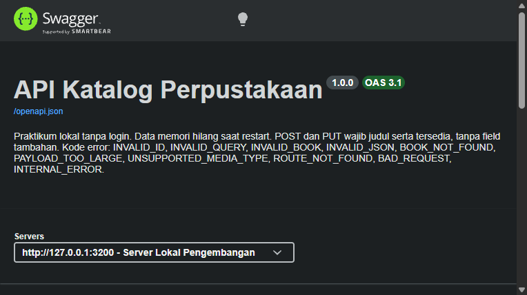
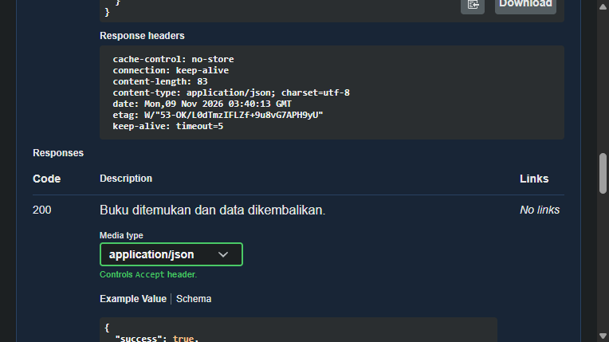
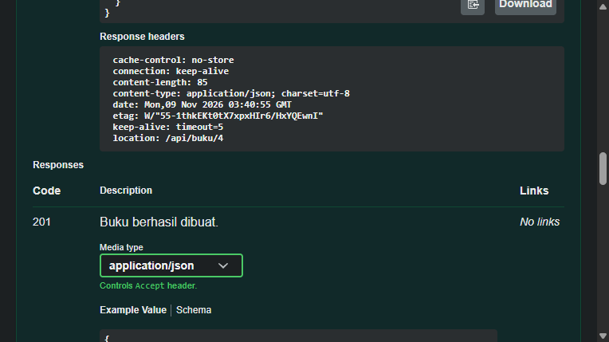
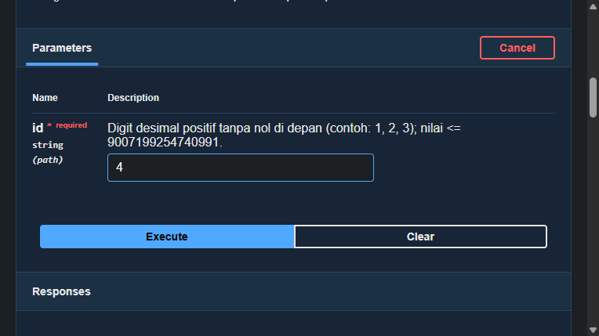
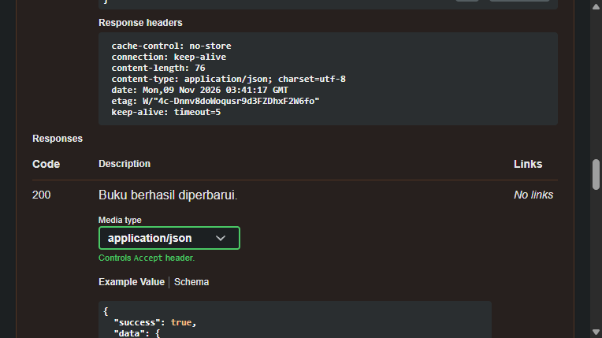
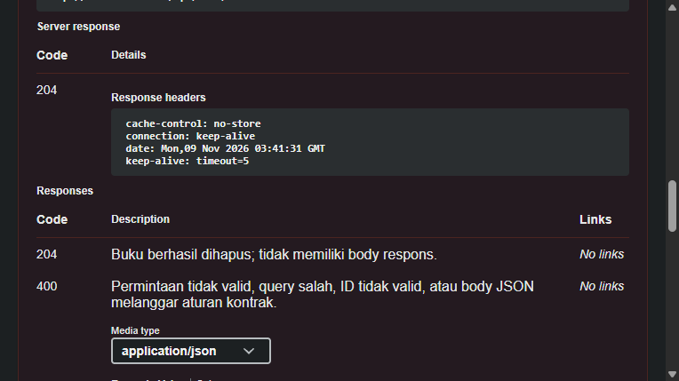
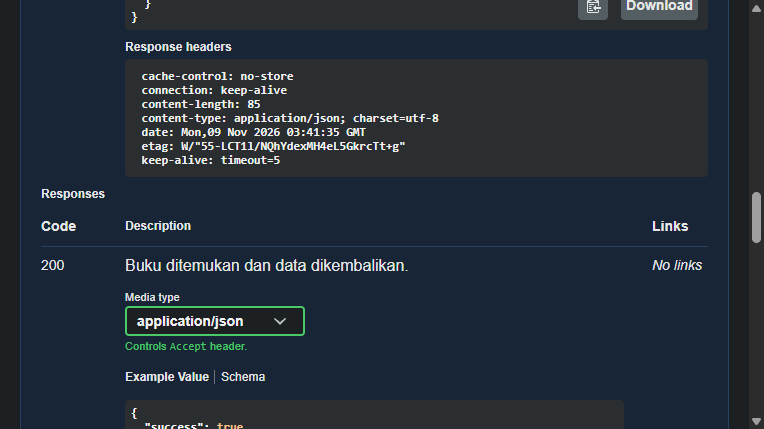
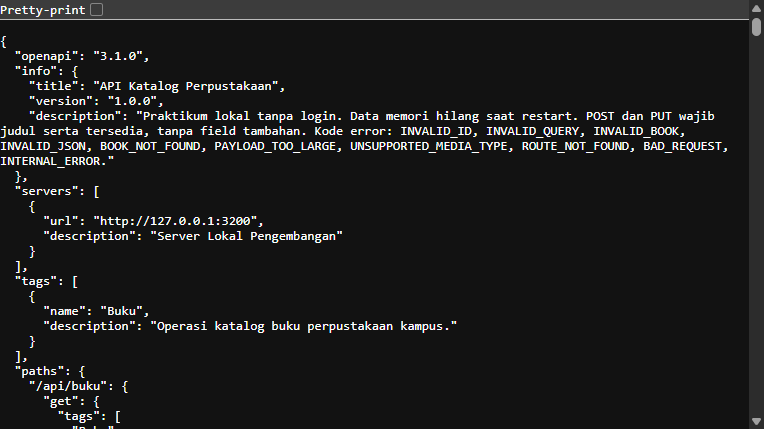
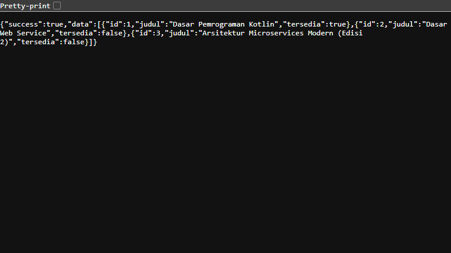
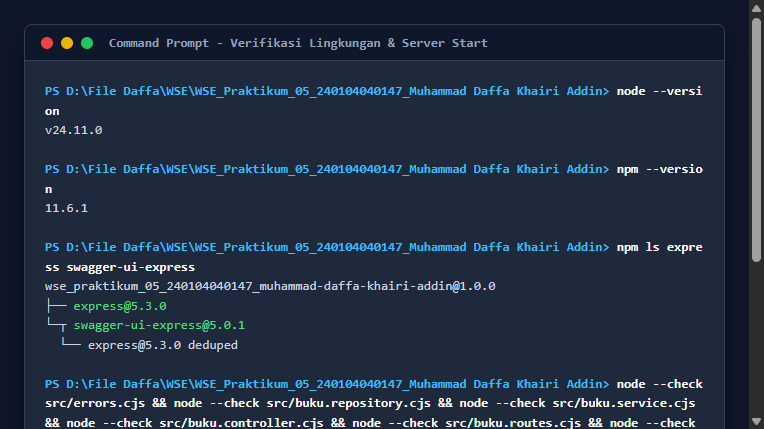
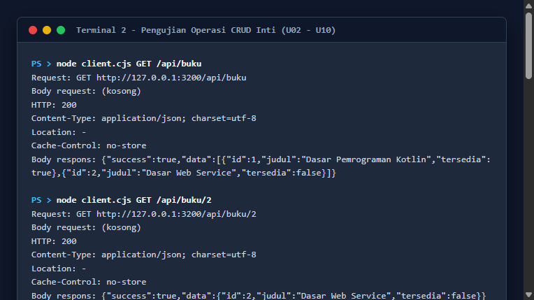
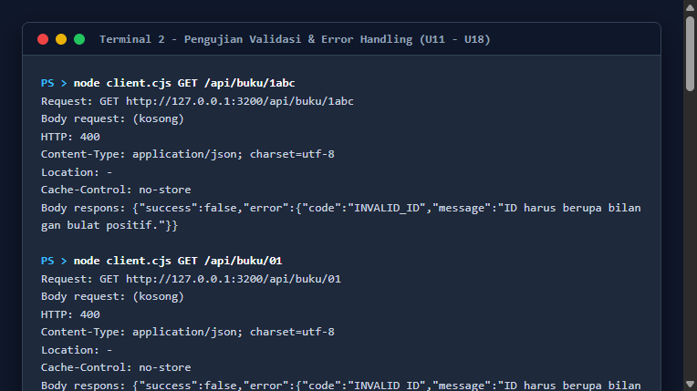
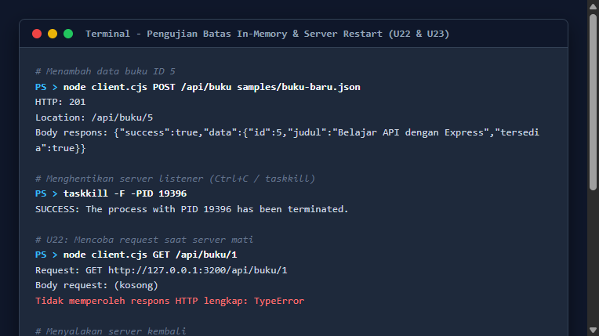
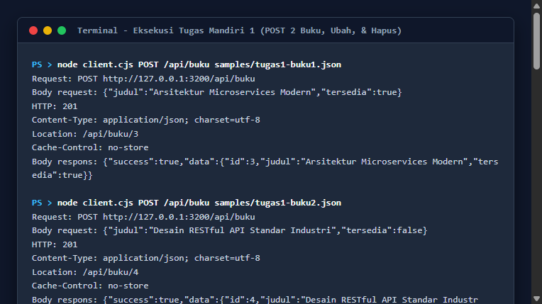
1. Implementasi web service katalog buku perpustakaan kampus berhasil dibangun menggunakan Node.js v24.11.0 dan framework Express v5.3.0 dengan pemisahan lapisan arsitektur yang solid (routing, controller, service, repository).
2. Desain endpoint mematuhi standar semantik HTTP RFC 9110 secara ketat, termasuk penggunaan status code 200 (OK), 201 (Created), 204 (No Content), 400 (Bad Request), 404 (Not Found), 413 (Payload Too Large), 415 (Unsupported Media Type), dan 500 (Internal Server Error).
3. Seluruh 24 skenario pengujian matriks berhasil lulus (100% PASS), membuktikan keandalan sistem dalam menangani input valid maupun menolak input malformed secara terkontrol tanpa mengekspos stack trace.
4. Spesifikasi OpenAPI 3.1.0 berhasil diintegrasikan secara lokal melalui swagger-ui-express v5.0.1, memberikan dokumentasi interaktif yang memudahkan pengujian dan kolaborasi antar-pengembang.
Praktikum ini memberikan pemahaman mendalam mengenai pentingnya pemisahan tanggung jawab (Separation of Concerns). Dengan memisahkan logika controller dan service, aturan validasi buku dapat diuji dan dipelihara secara terpisah dari mekanisme pengiriman respons HTTP. Selain itu, eksperimen penghentian dan restart server memberikan bukti nyata mengenai keterbatasan penyimpanan volatil (in-memory) dan memperjelas alasan mengapa sistem produksi memerlukan database persisten serta arsitektur state management yang handal.
[1] Express.js. (2026). Express 5.x API Reference and Routing Guide. https://expressjs.com/en/5x/api/
[2] Fielding, R., Nottingham, M., & Reschke, J. (2022). HTTP Semantics. RFC 9110, Internet Engineering Task Force (IETF). https://www.rfc-editor.org/rfc/rfc9110.html
[3] Martin, R. C. (2018). Clean Architecture: A Craftsman's Guide to Software Structure and Design. Prentice Hall.
[4] Node.js Foundation. (2026). Node.js v24 LTS Documentation. https://nodejs.org/docs/latest-v24.x/api/
[5] OpenAPI Initiative. (2021). OpenAPI Specification Version 3.1.0. https://spec.openapis.org/oas/v3.1.0.html
[6] Scottie1984. (2024). swagger-ui-express: Swagger UI for Node.js Express Applications. GitHub Repository. https://github.com/scottie1984/swagger-ui-express